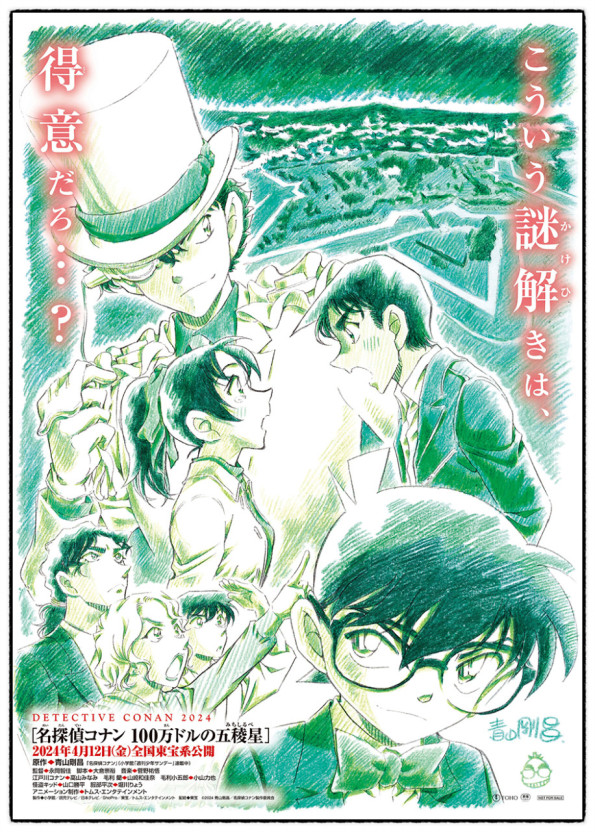
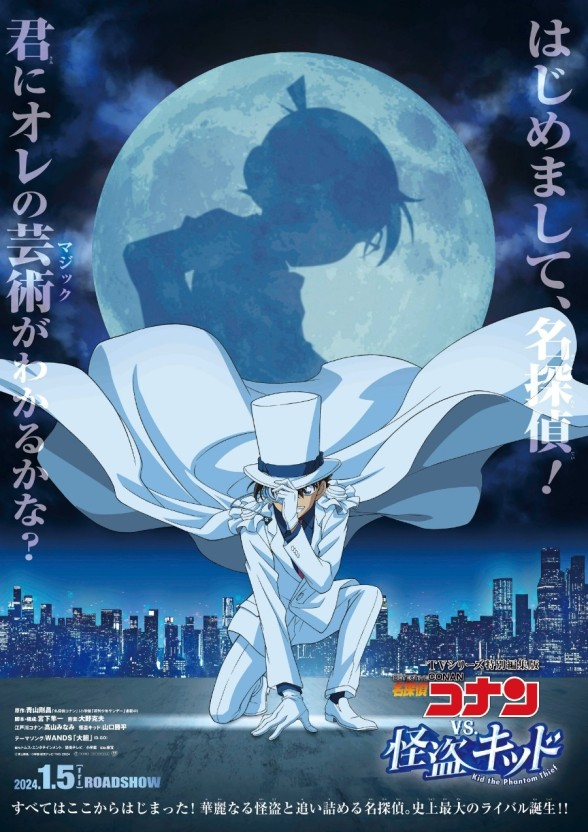

역대 극장판
극장판 시리즈 내에서도 원작과 세계관을 공유하며, 추리와 액션을 조합한 형태로
대체로 스케일이 크다.
애니메이션 극장판임에도 불구하고 성인들에게도 인기가 많고,
성인 관객들의 비중이 다른 애니메이션 극장판에 비해 많다.
| 1기 |
2기 |
3기 |
4기 |
5기 |
| 시한장치의 마천루 |
14번째 표적 |
세기말의 마술사 |
눈동자 속의 암살자 |
천국으로의 카운트다운 |
| 6기 |
7기 |
8기 |
9기 |
10기 |
| 베이커가의 망령 |
미궁의 십자로 |
은빛 날개의 마술사 |
수평선상의 음모 |
탐정들의 진혼가 |
| 11기 |
12기 |
13기 |
14기 |
15기 |
| 감벽의 관 |
전율의 악보 |
칠흑의 추적자 |
천공의 난파선 |
침묵의 15분 |
| 16기 |
17기 |
18기 |
19기 |
20기 |
| 11번째 스트라이커 |
절해의 탐정 |
이차원의 저격수 |
화염의 해바라기 |
순흑의 악몽 |
| 21기 |
22기 |
23기 |
24기 |
25기 |
| 진홍의 연가 |
제로의 집행인 |
감청의 권 |
비색의 탄환 |
할로윈의 신부 |
| 26기 |
27기(개봉 예정) |
콜라보 |
| 흑철의 어영 |
100만 달러의 오릉성 |
루팡VS코난 THE MOVIE |
코난 실종사건 |
- |
| TV스페셜 |
총편집 |
| 에피소드 원 |
진홍의 수학여행 |
비색의 부재증명 |
본청 형사의 사랑 이야기 |
흑철의 미스터리 트레인 |
100만 달러의 오릉성
2024년 4월 12일 개봉 예정


たった一つの真実見抜く見た目は子供、頭脳は大人。その名は、名探偵コナン！
홋카이도의 하코다테에 있는 도검 재벌의 깊은 창고에 괴도 키드로부터의 예고장이 도착한다. 이번에 키드가 노리는 것은,
막부 말기를 살았던 신선조 부장 히지카타 토시조에 얽힌 일본도라고 한다.
빅 쥬얼을 추구하는 키드가 왜 칼을 노리는건가...?
한편, 서쪽의 명탐정 핫토리 헤이지와 코난 일행도 하코다테에서 개최되는 검도대회를 위해 현지를 방문하고 있었으며,
범행 예고 당일, 헤이지가 키드의 변장을 멋지게 알아채고 몰아붙이는데...!?
같은 시간, 가슴에 열 글자의 베인 상처가 난 시신이 하코다테 창고 거리에 발견된다.
수사 선상에 떠오른 것은 "죽음의 상인"이라 불리며 아시아 일대에서 무기 상인으로 활동하는 일본계 미국인 남자.
그는 전시 군수산업에 깊이 관여했던 오노에 집안 초대 당주가 하코다테 어딘가 숨겼다고 알려진 보물을 찾고 있었다.
그것은 당시 일본의 패색이 짙었던 전황을 확 바꿀 정도의 강력한 무기라는 소문도...
그리고 그 보물과 키드가 노리는 칼은 아무래도 관계가 있는 듯하고, 칼을 노리는 키드에게
수수께끼의 "검사"의 그림자가 다가오는데...